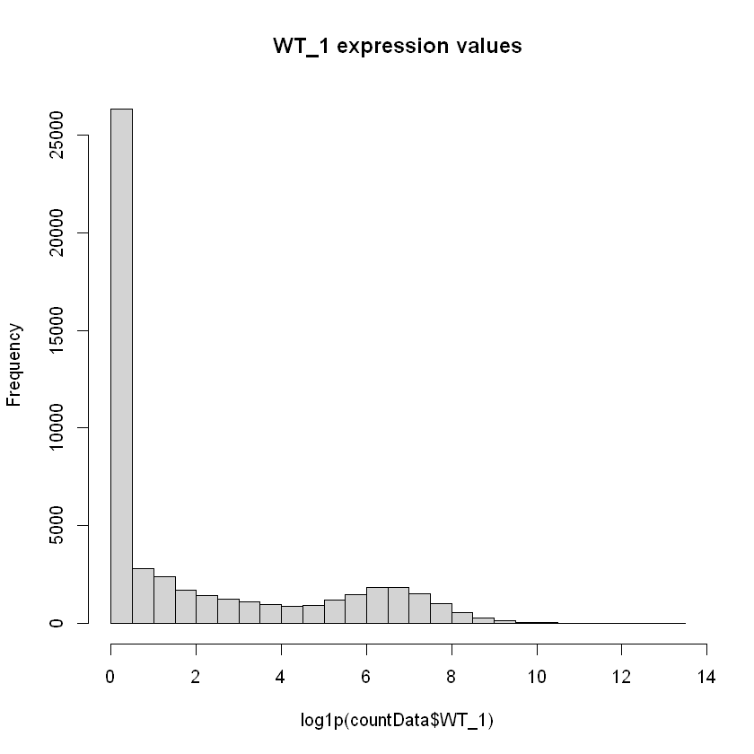
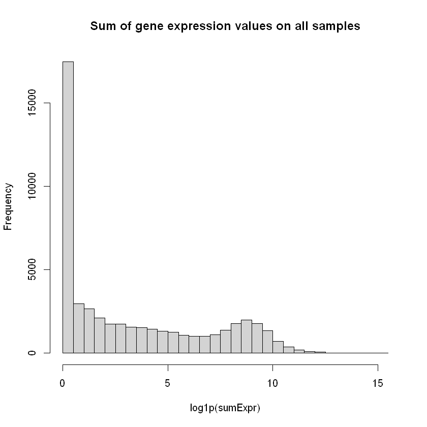

install.packages("ggplot2")
install.packages("pheatmap")
install.packages("ggrepel")
install.packages("openxlsx")
install.packages("readxl")
install.packages("tidyverse")
install.packages("RColorBrewer")
install.packages("pdftools")
install.packages("dplyr")
install.packages("ggridges")
install.packages("forcats")
install.packages("igraph")
# Install Bioconductor packages
if (!requireNamespace("BiocManager", quietly = TRUE)) {
install.packages("BiocManager")
}
BiocManager::install("edgeR")
BiocManager::install("DESeq2")
BiocManager::install("ComplexHeatmap")
BiocManager::install("clusterProfiler")
BiocManager::install("org.Hs.eg.db")
BiocManager::install("org.Mm.eg.db")
BiocManager::install("AnnotationDbi")
BiocManager::install("pathview")
BiocManager::install("DOSE")
BiocManager::install("enrichplot")
BiocManager::install("ReactomePA")
BiocManager::install("SummarizedExperiment")ABC.3: R analysis of bulkRNA expression matrix
R
bulkRNA
Things worth remembering from the ABC.3
Slides
Data formats and bulkRNA sequencing exercise
Tutorial
The following tutorial shows how to do read an expression matrix from a test file and prepare it for bulkRNA analysis with DeSeq2. Further analysis with DeSeq2 will be into another tutorial at future ABC sessions.
Install packages
First of all you need quite some packages for bulkRNA analysis. The following installations will also help in the fiture analysis tutorial where various different plots are explored. Note how you install some packages with install.packages (from the R default channel) and with BiocManager::install (from the BiocManager channel).”
We should then load the needed packages
library(edgeR)
library(DESeq2)
library(ggplot2)
library(ComplexHeatmap)
library(clusterProfiler)
library(pheatmap)
library(org.Hs.eg.db)
library(org.Mm.eg.db)
library(AnnotationDbi)
library(ggrepel)
library(openxlsx)
library(readxl)
library(pathview)
library(tidyverse)
library(RColorBrewer)
library(DOSE)
library(enrichplot)
library(pdftools)
library(dplyr)
library(ggridges)
library(forcats)
library(ReactomePA)
library(igraph)
library(BiocManager)Here we download a data matrix which we created in advance. The file is compressed, so we also unzip it (converting it from compressed to normal reading format) before reading.
download.file("https://github.com/AU-ABC/AU-ABC.github.io/raw/main/documentation/2024-08-20-ABC3/FeatureCountOutput.zip", destfile = "./FeatureCountOutput.zip")unzip("./FeatureCountOutput.zip")countData <- read.table("./FeatureCountOutput.txt", header = TRUE, sep = "\t")Now we have created the matrix Countdata and we check the rownames of the countMatrix. The names are simply numbers and not gene IDs or names. So we replace the row names with the countData$Geneid column of the dataset. We use the function “head” to view the first 5 names before and after substitution.
head(rownames(countData))
rownames(countData) <- countData$Geneid
head(rownames(countData))- '1'
- '2'
- '3'
- '4'
- '5'
- '6'
- 'DDX11L1'
- 'WASH7P'
- 'MIR6859-1'
- 'MIR1302-2HG'
- 'MIR1302-2'
- 'FAM138A'
If we look at column names, we see a certain number of names columns. The first ones are gene IDs and genetic informations about chromosome, starting and ending position, strand and length. The rest is sample names.
colnames(countData)
- 'Geneid'
- 'Chr'
- 'Start'
- 'End'
- 'Strand'
- 'Length'
- 'X1_.bam'
- 'X2_.bam'
- 'X3_.bam'
- 'X4_.bam'
- 'X5_.bam'
- 'X6_.bam'
- 'X7_.bam'
- 'X8_.bam'
- 'X9_.bam'
The sample names does not make sense for a person who did not do the sequencing of this data, therefore we rename it to the scientific annotation.
Tip
The order the colnames(countData) is shown, is the order you have to follow with the renaming for the scientific annotation.
sampleNames <- c("WT_1", "WT_2", "WT_3", "DRUG_1", "DRUG_2", "DRUG_3", "DRUG+SUPPLEMENT_1", "DRUG+SUPPLEMENT_2", "DRUG+SUPPLEMENT_3")The countmatrix countData contains additional information such as gene name, gene length, exon start and more. These informations are found in columns from 1 to 6. This means, that we have to change the samplenames starting from column number 7. Before we print the column names before and after we do substitution
colnames(countData)[7:length(colnames(countData))]
colnames(countData)[7:length(colnames(countData))] <- sampleNames
colnames(countData)- 'X1_.bam'
- 'X2_.bam'
- 'X3_.bam'
- 'X4_.bam'
- 'X5_.bam'
- 'X6_.bam'
- 'X7_.bam'
- 'X8_.bam'
- 'X9_.bam'
- 'Geneid'
- 'Chr'
- 'Start'
- 'End'
- 'Strand'
- 'Length'
- 'WT_1'
- 'WT_2'
- 'WT_3'
- 'DRUG_1'
- 'DRUG_2'
- 'DRUG_3'
- 'DRUG+SUPPLEMENT_1'
- 'DRUG+SUPPLEMENT_2'
- 'DRUG+SUPPLEMENT_3'
Any sequencing data is prone to noise. The kind of noise we remove here is arguably something of great discussion as to where and when to keep data. We can see there are a lot of genes by counting the rows of countData
nrow(countData) # This returns the number of genes in the countmatrix before removing noise.
49771
We can also plot a simple histogram of how many counts each gene has in a specific sample, for example WT_1. We use the logarithm log(x+1), where x is the expression to have a readable plot. Note how we can see many genes with 0 expression.
hist(log1p(countData$WT_1), breaks=30, main="WT_1 expression values")
Warning
This is however not a very useful plot, because a gene can be overexpressed under other conditions, and underexpressed in the WT_1 sample. We can try to look at the gene expression over all individuals for each gene using again a histogram.
we still have a number of genes with little or no expression. Those are of very little relevance in any analysis
sumExpr <- rowSums( countData[,7:15] )
hist( log1p(sumExpr), breaks=30, main="Sum of gene expression values on all samples")
As an example, we print the fifth gene to see the number of counts. If none of the samples have 5 or more counts of this gene, then we remove the gene.
countData[5, 7:ncol(countData)] | WT_1 | WT_2 | WT_3 | DRUG_1 | DRUG_2 | DRUG_3 | DRUG+SUPPLEMENT_1 | DRUG+SUPPLEMENT_2 | DRUG+SUPPLEMENT_3 | |
|---|---|---|---|---|---|---|---|---|---|
| <int> | <int> | <int> | <int> | <int> | <int> | <int> | <int> | <int> | |
| MIR1302-2 | 0 | 0 | 0 | 0 | 0 | 0 | 0 | 0 | 0 |
Below we use subset to apply the filter. We remove data (genes) contains little to no information. It essentially removes a gene from the countmatrix if the gene has less than 5 counts in all the samples.
countData <- subset(countData, rowSums(countData[, 7:ncol(countData)] > 5) > 0)We removed a lot of genes!
nrow(countData) #Returning the number of genes after removing noise.
21473
Condition matrix
The samples are defined in some condition like WT, DRUG, DRUG+SUPPLEMENT or some other condition.
conditions <- c(rep("WT", 3), rep("DRUG", 3), rep("DRUG+SUPPLEMENT", 3))
We create a dataframe with the condition and sample information
coldata <- data.frame(row.names = colnames(countData[0, 7:ncol(countData)]), conditions)coldata| conditions | |
|---|---|
| <chr> | |
| WT_1 | WT |
| WT_2 | WT |
| WT_3 | WT |
| DRUG_1 | DRUG |
| DRUG_2 | DRUG |
| DRUG_3 | DRUG |
| DRUG+SUPPLEMENT_1 | DRUG+SUPPLEMENT |
| DRUG+SUPPLEMENT_2 | DRUG+SUPPLEMENT |
| DRUG+SUPPLEMENT_3 | DRUG+SUPPLEMENT |
We create a subset of the countData so that we have an object only containing only the counts of the samples.
countData_subset <- countData[, -c(1:6)]head(countData_subset)| WT_1 | WT_2 | WT_3 | DRUG_1 | DRUG_2 | DRUG_3 | DRUG+SUPPLEMENT_1 | DRUG+SUPPLEMENT_2 | DRUG+SUPPLEMENT_3 | |
|---|---|---|---|---|---|---|---|---|---|
| <int> | <int> | <int> | <int> | <int> | <int> | <int> | <int> | <int> | |
| WASH7P | 45 | 45 | 37 | 109 | 84 | 107 | 123 | 128 | 72 |
| MIR6859-1 | 2 | 1 | 4 | 7 | 10 | 5 | 7 | 6 | 9 |
| LOC729737 | 6 | 3 | 6 | 9 | 7 | 5 | 85 | 81 | 68 |
| LOC100996442 | 70 | 66 | 61 | 82 | 58 | 70 | 127 | 107 | 100 |
| LOC127239154 | 6 | 7 | 6 | 23 | 20 | 19 | 5 | 5 | 4 |
| LOC100132287 | 2 | 4 | 1 | 3 | 2 | 2 | 4 | 6 | 4 |
We check if the sample names are correct. Both of these should return TRUE, otherwise there is some incorrect naming.
all(colnames(countData_subset) %in% rownames(coldata))
all(colnames(countData_subset) == rownames(coldata))
TRUE
TRUE
Applying DeSeq2
Time to use the DESeq2 normalization method to analyse your sequencing data. The commands below run DeSeq2 and
- builds a DeSeq2 object from the data matrix and condition matrix
- applyes DeSeq2
- transforms the expressions by variance stabilization
dds <- DESeqDataSetFromMatrix(count = countData_subset, colData = coldata, design = ~conditions)
dds <- DESeq(dds)
vsdata <- vst(dds, blind=FALSE)Warning message in DESeqDataSet(se, design = design, ignoreRank):
"some variables in design formula are characters, converting to factors"
Note: levels of factors in the design contain characters other than
letters, numbers, '_' and '.'. It is recommended (but not required) to use
only letters, numbers, and delimiters '_' or '.', as these are safe characters
for column names in R. [This is a message, not a warning or an error]
estimating size factors
Note: levels of factors in the design contain characters other than
letters, numbers, '_' and '.'. It is recommended (but not required) to use
only letters, numbers, and delimiters '_' or '.', as these are safe characters
for column names in R. [This is a message, not a warning or an error]
estimating dispersions
gene-wise dispersion estimates
mean-dispersion relationship
Note: levels of factors in the design contain characters other than
letters, numbers, '_' and '.'. It is recommended (but not required) to use
only letters, numbers, and delimiters '_' or '.', as these are safe characters
for column names in R. [This is a message, not a warning or an error]
final dispersion estimates
Note: levels of factors in the design contain characters other than
letters, numbers, '_' and '.'. It is recommended (but not required) to use
only letters, numbers, and delimiters '_' or '.', as these are safe characters
for column names in R. [This is a message, not a warning or an error]
fitting model and testing
To compute a variance stabilizing transformation is roughly similar to putting the data on the log2 scale, while also dealing with the sampling variability of low counts. It uses the design formula to calculate the within-group variability (if blind=FALSE) or the across-all-samples variability (if blind=TRUE). It does not use the design to remove variation in the data. It therefore does not remove variation that can be associated with batch or other covariates (nor does DESeq2 have a way to specify which covariates are nuisance and which are of interest).
The resulting object is called vsdata, which will be used for further analysis with DESeq2
vsdataclass: DESeqTransform
dim: 21473 9
metadata(1): version
assays(1): ''
rownames(21473): WASH7P MIR6859-1 ... TRNT TRNP
rowData names(26): baseMean baseVar ... maxCooks dispFit
colnames(9): WT_1 WT_2 ... DRUG+SUPPLEMENT_2 DRUG+SUPPLEMENT_3
colData names(2): conditions sizeFactor
wrap up
You have read and preprocessed a bulk RNA expression matrix and ran an analysis with DeSeq2. Further steps concern visualizing and interpreting the results inferred by DeSeq2 on the data.